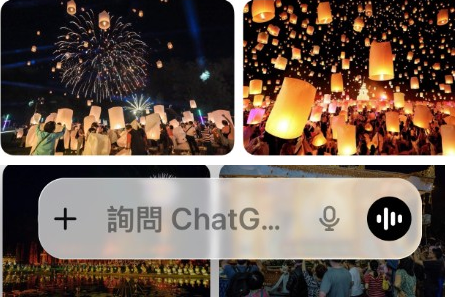
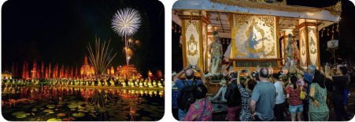
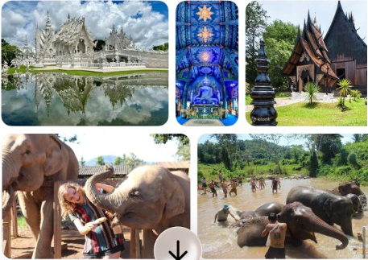
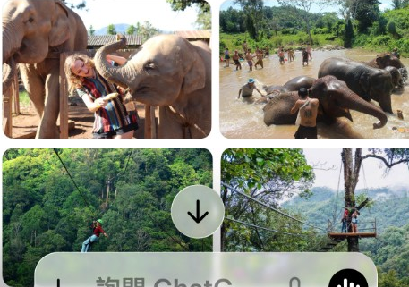
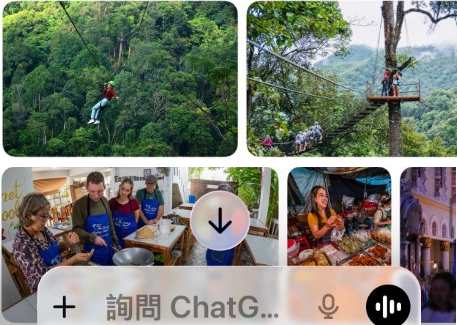
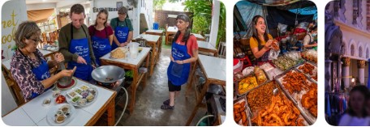

出發前備忘
一定要補上的項目
- 班機去／回、訂位代號、行李：（後面再補上資料）
- 各晚住宿飯店名稱、地址、入住時間：（後面再補上資料）
- 你備註的整段日期 11.24 ～ 21.1：目前截圖上的有細節的行程是 11/24～12/1 共 8 天。若 12/2 之後到 1/1 還要續住或轉地點，另開段落（後面再補上資料）。
行程總表
點「閱讀筆記」開啟該日 Markdown 渲染頁（需從本機伺服器或上線網域開啟，勿只雙擊 file://）。
| 天數 | 日期 | 主題 | 一則筆記 |
|---|---|---|---|
| 第 1 天 | 11/24 | 水燈（Ping River／塔佩門） | 閱讀筆記 |
| 第 2 天 | 11/25 | 古城泰服（預約）｜13:00–15:00 MAYA 接駁天燈會場 | 閱讀筆記 |
| 第 3 天 | 11/26 | 遊行、夜間動物園、古城＋咖啡 | 閱讀筆記 |
| 第 4 天 | 11/27 | 清萊一日（白廟、藍廟、黑屋） | 閱讀筆記 |
| 第 5 天 | 11/28 | 大象、森林咖啡；宿 大象朋友旅館（Agoda 11/28–29，可收合截圖） | 閱讀筆記 |
| 第 6 天 | 11/29 | 高空繩索、午後放鬆 | 閱讀筆記 |
| 第 7 天 | 11/30 | 廚藝教室、週末市集 | 閱讀筆記 |
| 第 8 天 | 12/1 | 早餐＋採買、回台 | 閱讀筆記 |
12/2 ～ 1/1 若另有規劃：（後面再補上資料）。
日與日之間移動（公里・自駕車程參考）
下表是參考用的距離與大約開車時間（不塞車、不休息的理想值）。實際以 Google 地圖導航 或到時路況為準；自駕／包車／一日團路線也會影響里程。
本表假設：前幾天住清邁古城一帶；第 4 天清萊當天往返清邁、第 4 晚仍住清邁；第 5 天起大象朋友旅館在美旺。若你第 4 晚改住清萊、或第 6–7 晚不在古城，表內「上一晚 → 下一早」的數字要再自己導一次。
| 區間 | 從 | 到 | 約距離 | 約自駕 | 備註 |
|---|---|---|---|---|---|
| 抵達 D1 | 清邁機場 CNX | 古城／塔佩一帶 | 約 5–7 km | 約 20–35 分 | 出關＋上車還要時間 |
| D1 晚 → D2～D3 | 前晚下榻處 | 同區（古城市區） | — | 不換飯店則 0；市區內活動 2–8 km 級、單程多為 5–20 分 | 去 MAYA 接駁等見當天筆記 |
| 市區內（舉例） | 塔佩／古城 | 清邁夜間動物園 | 約 9–12 km | 約 20–40 分 | D3 晚間可排 |
| D3 晚 → D4 出發 | 清邁市區出發 | 清萊白廟一帶 | 單程約 185–195 km | 單程約 3h–3h30 | 當天往返則同路線 ×2；中間玩白／藍／黑廟。塞車＋1h 不稀奇 |
| D4 晚 → D5 早上 | 清邁市區（假設 D4 晚回清邁住） | 美旺 大象朋友旅館 | 約 50–60 km | 約 1h 10m–1h 30m | 實際依飯店 Google 導航。若從 MAYA 出發見下一列（Grab 參考）。 |
| 同上（Grab） | MAYA 購物中心 | 美旺 大象朋友旅館 | 約 50–55 km | 同路段約 1h 10m–1h 30m | 行程預定搭 Grab。參考車資多介於 約 1,000–1,500 泰銖（฿）／單程，依距離、路況、尖峰、是否加價而變動；換算約 NT$ 900–1,400 級（匯率浮動，僅供心裡有底）。出發前請以 Grab App 內顯示估價為準，與實收可能不同。 |
| D5 晚 → D6 早上 | 美旺 大象朋友旅館 | 清邁北邊山區（Zipline 常見區） | 依場地約 70–120 km 級 | 常見約 1h 30m–2h 30m | 變因大；或先回市區中繼。見第 6 天預約地點後用導航重算最準 |
| D6 晚 → D7 | 前晚下榻處 | 廚藝／市集（多在市區） | 市區內 2–10 km 級 | 約 10–30 分 | 第 6–7 晚住哪一區依你訂房；若兩天都住古城內幾乎走路或短程 |
| 回程 D8 | 飯店（假設市區／古城） | 清邁機場 CNX | 約 5–8 km | 約 20–35 分 | 預留還車、報到劃位 |
市區與市郊數字綜合常見導航結果整理；清萊單程、美旺往返清邁市區為行程中最長的常態路段，排時間時寧願寬鬆一點。
地圖（清邁為主 ＋ 清萊一日）
若地圖縮得太小、看不出誰在誰旁邊，請先看本頁最上方插圖的 A～F 相對關係。下方地圖已標上行程內出現的點位（清邁＋美旺＋清萊）。點或滑過圖釘可見名稱，圖外連結可轉到 Google 地圖。若你說的「奇妙」是指誤聽的寧曼，已另標寧曼路商圈參考點（近 MAYA）。
每日筆記（Markdown 檔案）
每則內文檔在 content/chiang-mai/days/*.md，要改文案或換照片路徑直接編輯該檔最方便。下方卡片連到同一份內容的閱讀頁。





